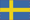

<mat-toolbar color="primary">
    <button mat-icon-button [routerLink]="['/myPage']">
        <mat-icon>home</mat-icon>
    </button>
    <div class="fill-remaining-place"></div>
    <button mat-button [routerLink]="['/proposals']">Proposal</button> |
    <button mat-button [routerLink]="['/projects']">Project</button>
    <div class="fill-remaining-place"></div>

    

    <mat-menu #userMenu="matMenu" [overlapTrigger]="false">
        <button mat-menu-item [routerLink]="['/login']">Logout</button>
        <div>
            <button mat-icon-button  (click)="setLanguage('en')">
                
            </button>
            <button mat-icon-button  (click)="setLanguage('sv')">
                
            </button>
        </div>
    </mat-menu>

    <button mat-icon-button [matMenuTriggerFor]="manageMenu">
        <mat-icon>menu</mat-icon>
    </button>
    <mat-menu #manageMenu="matMenu" [overlapTrigger]="false">
        <button mat-menu-item>Time manage</button>
        <button mat-menu-item>Material manage</button>
    </mat-menu>
</mat-toolbar>